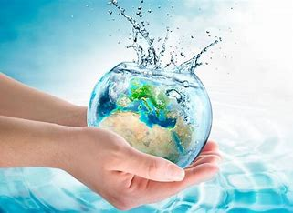
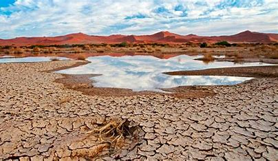

-Contaminacion del agua
-El agua en la agricultura
-Ciclo del agua
-Conflictos del agua
-El agua en la ciencia
PROYECTO TRANSVERSAL
EL AGUA
¿Qué es el agua?
El Agua, sustancia compuesta por los elementos químicos hidrógeno y oxígeno, que existe en estado gaseoso, líquido y sólido (agua).
El agua (del latín aqua) es una sustancia cuya molécula está compuesta por dos átomos de hidrógeno y uno de oxígeno (H2O) unidos por un enlace covalente.
El agua cubre el 71 % de la superficie de la corteza terrestre. Se localiza principalmente en los océanos, donde se concentra el 96,5 % del total.
El agua circula constantemente en un ciclo de evaporación o transpiración (evapotranspiración), precipitación y desplazamiento hacia el mar.
El agua constituye la base de la sangre, los jugos digestivos, la orina y la transpiración, y está presente en los músculos magros, la grasa y los huesos.
La escasez del agua es reconocida como una de las amenazas más críticas para el correcto funcionamiento de la sociedad y la supervivencia.

- El agua es vida
- Es indespensable
- Es por ello que la debemos cuidar
- Un bien natural
- Es un elemento esencial para toda la biosfera
EL AGUA LIQUIDA ES VITAL
- En los menores ayuda a su cresimiento
- En adolescentes en su desarrollo
- En adultos a que esten en buenas condiciones
- En general a la salud
- En el cuidado de la piel
Tipos de agua
- Agua potable
- Agua salada
- Agua mineral
- Agua dulce
- Agua dura
Beneficios básicos del agua
- Ayuda a eliminar toxinas del cuerpo
- Regula la temperatura corporal
- Previene la deshidratación
- Ayuda a prevenir la obesidad
- Previene problemas de salud crónicos
Propiedades del agua
- Acción disolvente
- Densidad electrónica
- Conductividad térmica
- Tensión superficial
- constante dialectica
¿QUÉ ES LA ESCASEZ DE AGUA?
La escasez de agua se refiere a la falta de suficientes recursos hídricos para satisfacer las demandas de consumo de agua en una región, El problema
de la escasez de agua afecta a alrededor de dos mil ochocientos millones de personas en todos los continentes del mundo durante al menos un mes cada año.
CAUSAS DE LA ESCASEZ DE AGUA
- El cambio climático
- Las alteraciones en los patrones de precipitación
- el aumento de las temperaturas
- El uso ineficiente del agua
- La descarga de desechos industriales y domésticos
CONSECUENCIAS DE LA ESCASEZ DEL AGUA
La escasez de agua tiene consecuencias graves en el medio ambiente y en la vida de las personas los ecosistemas acuáticos se ven afectados por la reducción de los caudales de los ríos y la disminución de los niveles de agua en lagos y embalses, esto pone en peligro la flora y fauna que dependen de estos hábitats, afectando la biodiversidad y el equilibrio de los ecosistemas
Además, la escasez de agua puede llevar a la desertificación de áreas previamente fértiles. La falta de agua adecuada para la agricultura y la vegetación puede provocar la degradación del suelo y la pérdida de biodiversidad, esto afecta la seguridad alimentaria y agrava los problemas de pobreza y hambre en distintas partes del mundo.
¿CÓMO PODEMOS PREVENIR LA ESCASEZ DE AGUA?
- El cambio climático
- Gestión gubernamental
- Industria y comercios responsables
- Racionalización del riego
- Concientización pública
- Participación comunitaria
- Uso eficiente en el hogar

¿POR QUÉ ES IMPORTANTE CUIDAR EL AGUA?
El cuidado del agua es importante porque es un recurso vital para la supervivencia humana y el mantenimiento de los ecosistemas también el agua es esencial para la vida, y es necesaria para el consumo, la higiene, la producción de alimentos y la generación de energía. Sin agua, la vida tal como la conocemos no sería posible
Además, el agua es un recurso limitado que aunque la Tierra está cubierta en un 70% de agua, solo el 2,5% es agua dulce de este porcentaje solo una pequeña fracción es agua potable, esto significa que el acceso al agua potable es limitado en muchas partes del mundo.
La contaminación del agua puede ser causada por una variedad de factores, como la agricultura, la minería, la industria y la eliminación inadecuada de residuos.